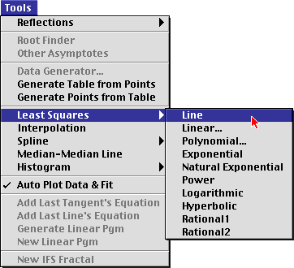
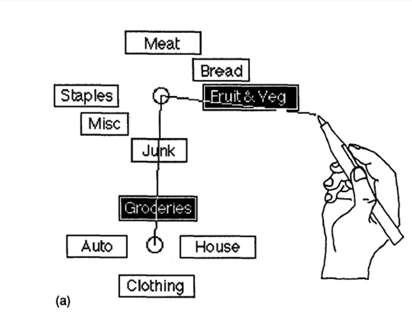
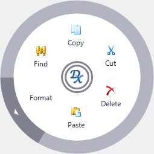

Hi! Welcome! Today, most menus you see on the computer are of the linear type (see below for description). This experiment is to test two unconventional menu types that you may or may not be familiar with: the Marking and Radial Menus (see below for description). The experiment will ask you to select specified items using the two menu types. The research question is to compare performance measure of speed and efficiency for the two menu types.
Goal of the Study: To study and compare the usability of Marking versus Radial menus
Experiment Instructions:
- There will be a questionnare before and after the experiment and each is expected to last roughly 5 minutes
- You will be provided with a participant ID - use it for this application and in the pre- and post-experiment questionnaires
- During the experiment, you will be asked to select items using the Marking menu or Radial menu
- There will be a total of 10 trials under different conditions
- Please feel free to take a 5 minute break if necessary
- The experiment itself will take about 10 minutes not including the break
Background on Marking and Radial Menus and how to use them?
Traditional Linear Menu

- Press the left button to open the menu options
- Move the cursor the to the desired option
- Press the left button to make your selection
Marking Menu

- Press hold down the right or left button to display the menu options
- Drag the cursor the desired option
- Release the left button to make your selection
Radial Menu

- Press the right button to display the menu options
- Move the cursor to the desired option
- Press the left button to make your selection
Notes on Confidentiality:
- The data collected will be used for academic purposes only
- Specifically, it will be used for a homework assignment in the course Human Computer Interaction at NUS
- Your data will be confidential and deleted immediately once the study is complete
- No personal or identifying information will be included in the study
Consent:
Please ensure that you have read the information on this page carefully. By clicking on the Submit button below, you consent to participate in this experiment.
Thank you for taking part in this experiment! You time is much appreiciated.